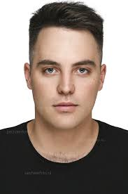
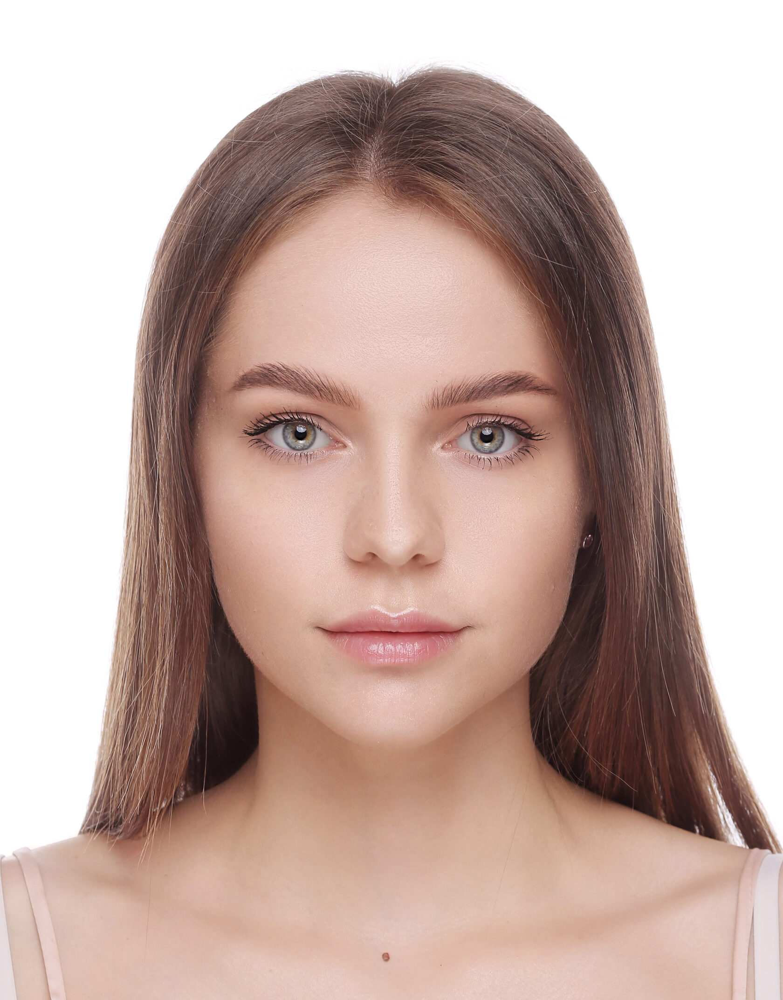

Ты не пройдешь!
Вооружайтесь, кибервоины! Квалификации на соревнования CTF стартуют в эти выходные с 10 по 11 июля с 12:00 до 12:00. Только самые острые умы дойдут до финального поединка 17 июля!
ПопробоватьНаши услуги
Клуб CyberWarriors предоставляет практико-ориентированную платформу для обучения, где студенты и начинающие специалисты в области кибербезопасности развивают профессиональные навыки через участие в CTF-турнирах.
Преимущества
- Практика вместо теории: Участники учатся через реальные задачи, моделирующие атаки и защиту.
- Работа в команде: Вы развиваете софт-скиллы, учитесь работать в условиях давления и распределения ролей.
- Развитие креативного и критического мышления: CTF требует нестандартных подходов, анализа и логики.
Наша миссия
Миссия клуба CyberWarriors — развивать у студентов и начинающих специалистов реальные навыки в области кибербезопасности через участие в CTF-соревнованиях (Capture the Flag).
Мы стремимся создать обучающую среду, где каждый может расти, учиться защищать цифровое пространство и применять полученные знания в условиях, приближённых к реальным киберугрозам.
Наша команда

Валерий Валерьевич
Технический руководитель

Степан Викторович
Эксперт по взлому Web

Ольга Антоновна
Аналитик угроз и OSINT
Достижения
- 1 место — CTF Kazakhstan 2024
- Лучшее решение в номинации "Reverse Engineering" — UniCTF Online 2021
- Участие в международной олимпиаде по кибербезопасности GlobalCyberCamp 2022
- Победители в категории "Forensics" — Student CyberCup Karaganda 2023